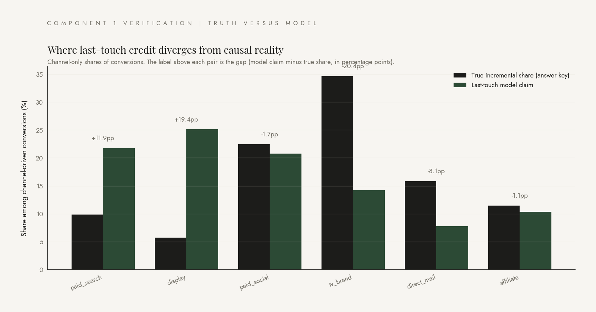
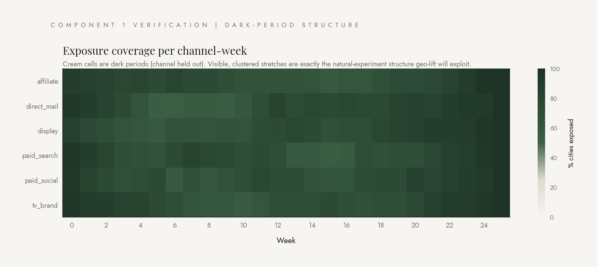
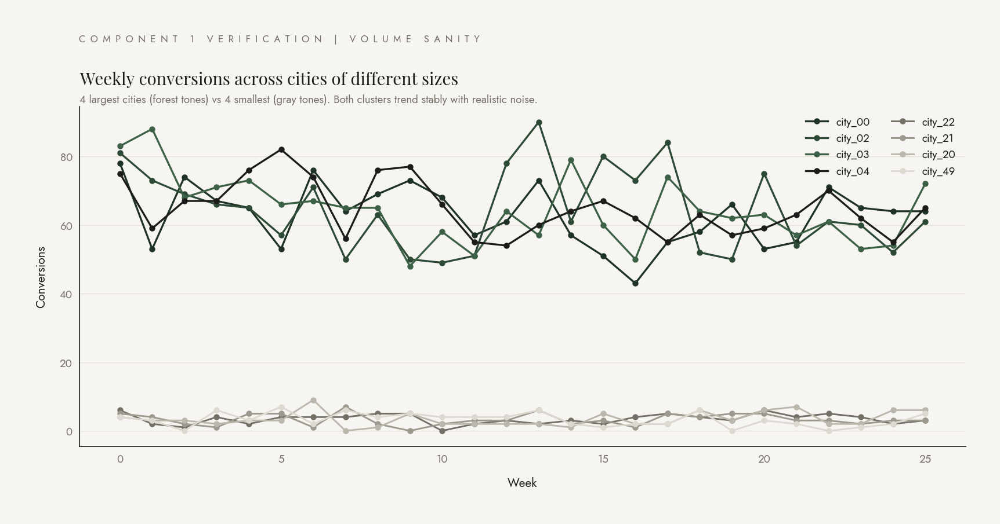

Building an answer key by construction.
A validation system needs ground truth. Real attribution data has none. So we built it: 100,000 simulated users across 50 cities, 26 weeks of marketing exposure, six channels with deliberately different over-, under-, and accurate-attribution patterns baked into the data-generating process.
Real attribution data has no answer key. That's the entire problem. The question "did this channel actually drive this conversion" is unanswerable from production data alone, because you only ever see one universe: the one where the channel was on. To validate any attribution method, we need data where we know the answer in advance. So that's what I built.
The mechanism is what statisticians call a hazard model. For each (user, week), the conversion probability is a baseline rate plus a per-channel boost for every channel the user was exposed to that week. We draw a coin flip at that probability, and we keep an honest tally of which channel deserves credit for each conversion. The tally is the answer key.
The chart on the right below is the verification. Blue bars are the configured truth: the share of conversions each channel actually caused. Forest-green bars are what a deliberately-broken last-touch attribution model claims. Notice how display is wildly over-credited and TV brand is wildly under-credited. That's the pattern the rest of the system has to detect from public data alone, without ever consulting the answer key.
Below the verification: the dark-period structure. Some channel-week-city cells are deliberately turned off, in stretches of three weeks or more. Without those dark periods, geo-lift has nothing to compare. With them, every active vs dark contrast is a natural-experiment data point.
Truth versus model: the verification chart
Channel-only shares of the conversions each channel was responsible for, as built into the data, compared to what last-touch attribution claims after the fact. The gap above each pair is the misallocation we'll later try to detect from public data alone.


Dark periods, the natural-experiment structure
Cream cells are city-channel-week combinations where the channel was held out. Roughly 25% of cells are dark, in stretches of at least three weeks. These are what the geo-lift engine exploits to identify each channel's incremental effect.
City-size variance for matching
Conversions per week, eight sample cities (four largest in forest tones, four smallest in gray). The size separation is intentional: city features must vary across the population so the matching layer can find good treatment-and-control pairs for synthetic-control extensions.
